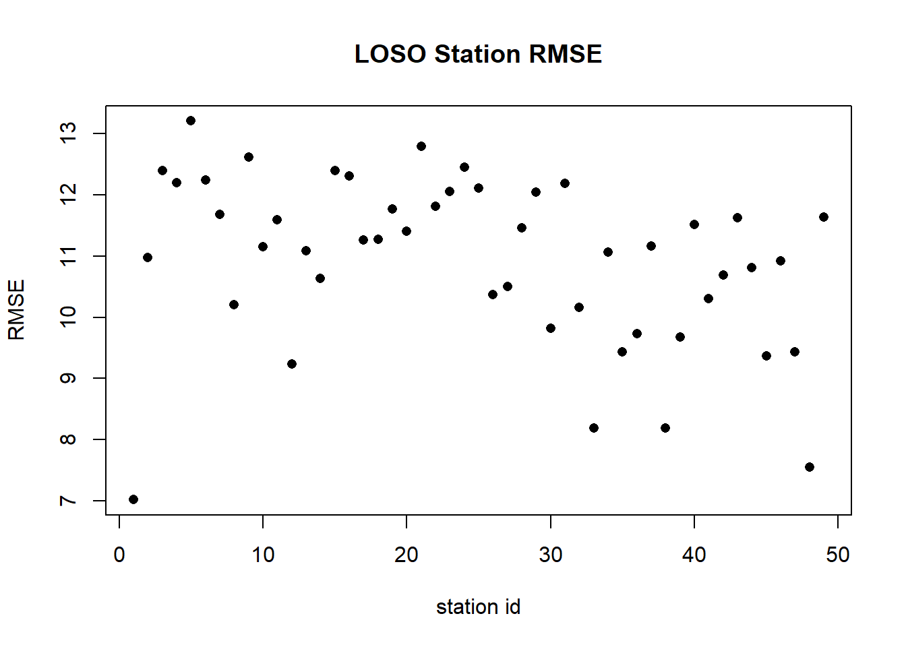
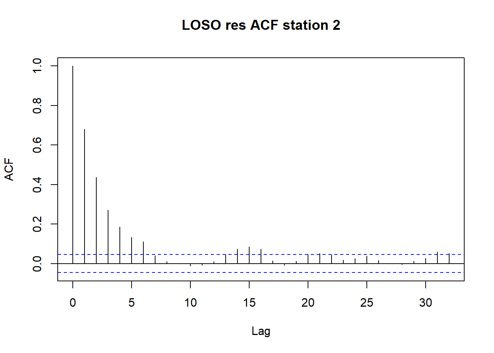

load("../data/HDGM_res_EM.RData")
load("../data/agri_matrix_array_em.RData")
load("../data/HDGM_cv_res.RData")Linear Gaussian State Space
We will use the notation and follow chapter 6 of (Shumway and Stoffer 2005).
General Linear Gaussian State Space
\[ \begin{align} x_{t} &= \Phi_t x_{t-1} + \Upsilon_t u_t + w_t \\ y_t &= A_t x_t + \Gamma_t u_t + v_t \\ w_t & \sim N(0, Q_t) \quad \text{i.i.d} \\ v_t & \sim N(0, R_t) \quad \text{i.i.d} \\ w_{t_i} & \perp v_{t_j} \quad \forall \quad t_i, t_j \end{align} \tag{1}\]
where
Vectors
\(x_t\) : state vector (p x 1)
\(y_t\) : observation vector (q x 1)
\(u_t\) : exogenous input vector (r x 1)
Notation
\[ x^{s}_t = E(x_t|y_{1:s}) \tag{2}\]
\[ P^{s}_{t1,t2} = E\{(x_{t_1} - x^s_{t_1})(x_{t_2} - x^s_{t_2})^\top|y_{1:s}\} \tag{3}\]
where for ease of notation \(P^{s}_{t} := P^{s}_{t,t}\).
\(y_{t,i}\) is the \(i^{th}\) component of \(y_t\).
Kalman Filter and Smoother
Kalman Filter
Assuming known initial conditions \(x^0_0\) and \(P^0_0\) we have
Prediction
\[ x^{t-1}_t = \Phi_t x^{t-1}_{t-1} + \Upsilon_t u_t \tag{4}\]
\[ P^{t-1}_t = \Phi_t P^{t-1}_{t-1} \Phi^{\top}_{t} + Q_t \tag{5}\]
Filtering
\[ x^{t}_t = x^{t-1}_{t} + K_t (y_t - A_t x^{t-1}_{t} - \Gamma u_t) \tag{6}\]
\[ P^{t}_t = (I - K_t A_t)P^{t-1}_t \tag{7}\]
Where the Kalman gain is
\[ K_t = P^{t-1}_t A^\top_t(A_t P^{t-1}_t A^{\top}_t + R_t)^{-1} \]
Innovations and their covariance are then defined as
\[ \epsilon_t = y_t - E(y_t|y_{1:(t-1)}) = y_t - A_t x^{t-1}_t - \Gamma u_t \tag{8}\]
\[ \Gamma_t = \text{var}(\epsilon_t) = \text{var}\{A_t(x_t - x^{t-1}_t) + v_t\} = A_t P^{t-1}_t A^\top_t + R_t \tag{9}\]
Kalman Smoother
\[ x^T_{t-1} = x^{t-1}_{t-1} + J_{t-1} (x^T_{t} - x^{t-1}_t) \tag{10}\]
\[ P^T_{t-1} = P^{t-1}_{t-1} + J_{t-1}(P^T_{t} - P^{t-1}_t) J^\top_{t-1} \tag{11}\]
where
\[ J_{t-1} = P^{t-1}_{t-1} \Phi_t (P^{t-1}_{t})^{-1} \tag{12}\]
Lag-One Covariance Smoother
\[ P^T_{t-1, t-2} = P^{t-1}_{t-1} J^\top_{t-2} + J_{t-1}(P^T_{t,t-1} - \Phi_t P^{t-1}_{t-1}) J^\top_{t-2} \tag{13}\]
with initial condition
\[ P^T_{n-1, n-2} = (I - K_n A_n) \Phi_n P^{n-1}_{n-1} \tag{14}\]
Some computational notes
Since the smoother and the filter will return many covariance matrices it is convenient to save only the lower or upper diagonal elements, here this approach is used, other approaches consist in computing the Cholesky decomposition and storing that elements, this is useful for matrices that will be inverted, more useful and interesting computational facts can be found in (Durbin and Koopman 2012) and in NASA papers such as (J Russell Carpenter).
Likelihood
Complete Data Likelihood
The two times the negative “complete data” likelihood is: \[ \begin{aligned} -2 \ln L_{X,Y}(\Theta) &= \ln |\Sigma_0| + (x_0 - \mu_0)^\top \Sigma_0^{-1} (x_0 - \mu_0) \\ &\quad + \sum^{T}_{t=1}\ln |Q_t| + \sum_{t=1}^{T} (x_t - \Phi x_{t-1} - \Upsilon_t u_t)^\top Q^{-1}_t (x_t - \Phi x_{t-1} - \Upsilon_t u_t) \\ &\quad + \sum^{T}_{t=1}\ln |R_t| + \sum_{t=1}^{T} (y_t - A_t x_t - \Gamma_t u_t)^\top R^{-1}_t (y_t - A_t x_t - \Gamma_t u_t) \end{aligned} \tag{15}\]
Marginal Likelihood
Defining with \(\Theta\) the vector of all unknown parameters, using Equation 8 and Equation 9 as a function of \(\Theta\) the two times negative marginal likelihood for \(y\) is:
\[ -2 \log L_Y(\Theta) = \sum^{T}_{t = 1}\log |\Sigma_t(\Theta)| + \sum^{T}_{t=1} \epsilon^\top_t (\Theta) \Sigma^{-1}_t(\Theta) \epsilon_t (\Theta) \tag{16}\]
Model Restrictions
Before proceeding to estimation we focuse on a restricted subset of models.
Constant matrices and covariances
A possible but still quite general model restriction is
\[ \begin{align} x_{t} &= \Phi x_{t-1} + w_t \\ y_t &= A x_t + \Gamma_t u + v_t \\ w_t & \sim N(0, Q) \quad \text{i.i.d} \\ v_t & \sim N(0, R) \quad \text{i.i.d} \end{align} \tag{17}\]
with complete twice negative log likelihood:
\[ \begin{aligned} -2 \ln L_{X,Y}(\Theta) &= \ln |\Sigma_0| + (x_0 - \mu_0)^\top \Sigma_0^{-1} (x_0 - \mu_0) \\ &\quad + T \ln |Q| + \sum_{t=1}^{T} (x_t - \Phi x_{t-1})^\top Q^{-1} (x_t - \Phi x_{t-1}) \\ &\quad + T \ln |R| + \sum_{t=1}^{T} (y_t - A x_t - \Gamma_t u)^\top R^{-1} (y_t - A x_t - \Gamma_t u) \end{aligned} \tag{18}\]
Parameters estimation
In the following we assume \(\Gamma_t\) time varying but known while \(u\) is fixed but unknown. The zero state mean \(\mu_0\) and zero state covariance matrix \(\Sigma_0\) will be treated as unknown parameters. Note that there’s a vast literature about the diffuse initialization of the Kalman Filter (see for example chapter 5 of (Durbin and Koopman 2012)) but here is not taken into consideration due to time limitations.
Since all the distribution are assumed known a natural way to estimate the parameters is to maximize the likelihood, there are many possibile methods: among others the usually employed ones are the Netwon-Raphson (NR) or the Expectation Maximization (EM).
The NR requires evaluation of Gradient and Hessian, which in some cases have to be computed numerically, while the EM doesn’t. It is a common strategy to start the procedure with EM and after switch to NR, here only the EM will be considered.
Expectation Maximization
Following (Shumway and Stoffer 2005), with the slight differences of the inclusion of the exogenous term \(u\); to ensure identifiability, we initally consider known the matrix \(A\) so \(\Theta\) holds all elements of \(\{\Phi,Q,R,u\}\). We report the EM relative to this problem. The iteration \(j^{\text{th}}\) of EM consists in the update \[ \Theta^{j} = \text{argmin}_{\Theta} \{ Q(\Theta|\Theta^{j-1}) \} = \text{argmin}_{\Theta} \{E[-2 \log L_{X,Y}(\Theta) | y_{1:T}, \Theta^{j-1}] \} \tag{19}\]
In the scenario considered and using trace property: \[ \begin{aligned} Q(\Theta|\Theta^{j-1}) &= \ln |\Sigma_0| + \text{tr} \left\{ \Sigma_0^{-1} [ P^T_0 + (x^T_0 - \mu_0) (x^T_0 - \mu_0)^\top] \right\} \\ &\quad + T \ln |Q| + \text{tr} \left\{ Q^{-1}[S_{11} - S_{10} \Phi^{\top} - \Phi S_{10}^\top + \Phi S_{00} \Phi^\top ] \right\} \\ &\quad + T \ln |R| + \text{tr} \left\{R^{-1} \left[ \left( \sum_{t=1}^{T} \psi_t \psi^\top_t \right) - A \left( \sum_{t=1}^{T} x^T_t \psi^\top_t \right) - \left( \sum_{t=1}^{T} x^T_t \psi^\top_t \right)^\top A^\top + A S_{11} A^\top \right] \right\} \end{aligned} \tag{20}\]
where
\[ \begin{align} S_{00} &= \sum^{T}_{t = 1} x^T_{t-1} (x^T_{t-1})^\top + P^T_{t-1} \\ S_{10} &= \sum^{T}_{t = 1} x^T_t (x^T_{t-1})^\top + P^T_{t,t-1} \\ S_{11} &= \sum^{T}_{t = 1} x^T_t (x^T_{t})^\top + P^T_{t,t} \end{align} \tag{21}\]
and
\[ \psi_t = y_t - \Gamma_t u \tag{22}\]
The EM fully analytical updates are then
\[ \Phi^j = S_{10} S_{00}^{-1} \tag{23}\]
\[ Q^j = T^{-1}(S_{11} - S_{10} S^{-1}_{00} S^\top_{10}) \tag{24}\]
\[ R^j = T^{-1} \left[ \left( \sum_{t=1}^{T} \psi_t \psi^\top_t \right) - A \left( \sum_{t=1}^{T} x^T_t \psi^\top_t \right) - \left( \sum_{t=1}^{T} x^T_t \psi^\top_t \right)^\top A^\top + A S_{11} A^\top \right] \tag{25}\]
\[ u^j = \left[\sum^T_{t=1} \Gamma^\top_t \Gamma_t \right]^{-1} \left[ \sum^T_{t=1} \Gamma^\top_t (y_t - A x_t) \right] \tag{26}\]
\[ \mu_0 = x^T_0; \quad \Sigma_0 = P^T_0 \tag{27}\]
Missing Data
In case of missing data the Kalman Filter and Smoother updates won’t change much since it’s sufficient to predict the missing value. In the EM we partition the observation vector \(y_t\) in \(\tilde{y_t} = \left(\left(y^{(1)}_t \right)^\top, \left(y^{(2)} _t \right)^\top \right)^\top\) where \(y^{(1)}_t\) is the non missing set and \(y^{(2)}_t\) is the missing set at time \(t\); with an opportune permutation matrix \(D_t\) we have \(y_t = D_t \tilde{y}_t\).
Inference
Numerical Hessian and standard errors
A simple, but still potentially computationally intensive, way to obtain an estimate of the mle standard errors are the numerical standard errors from the inverse of the information matrix, which here is the (numerical) negative hessian at the mle.
Bootstrap
The non-parametric bootstrap based on error resampling (excluding the first observations to improve stability) can be found in (Shumway and Stoffer 2005).
Bayesian Inference
Parameters selection and error evaluation
Information Criteria
Since the Kalman filter returns the likelihood we can easily compute the AIC, BIC etc.
Cross - Validation
Expanding or Sliding Window
Leave one station out (only for certain models)
HDGM
Model
Following (Otto et al. 2023) the Hidden Dynamic Geostatistical Model (HDGM) is obtnaied imposing the following restrictions on model from Equation 17
\[ A = \alpha I, \quad \Phi = g I, \quad R = \sigma^2_Y I \tag{28}\]
\[ Q_{ij} = \exp (-|| s(y_{t,i}) - s(y_{t,j}) ||_2 / \theta) \tag{29}\]
with scalars \(\alpha\), \(|g|<1\) (implied stationary state autoregression structure), \(\sigma^2_{Y}, \theta > 0\) and \(s()\) stands for the spatial point of its argument.
The state innovation covariance has unitary variance and exponential correlation.
EM
The EM updates follow the previously given ones with some changes. The ones reported are from (Calculli et al. 2015), where missing data updates are present and a more general multivariate response structure is considered.
The update for \(g\) is the univariate version of the update for \(\Phi\) so the trace is taken: \(g^j = \frac{\text{tr}(S_{10})}{\text{tr}(S_{11})}\).
The \(\sigma^2_Y\) update is \((\sigma^2_Y)^j = \frac{1}{qT} \text{tr} \left( \sum^{T}_{t=1} \Omega_t \right)\) where \(\Omega_t = y_t - \Gamma_t u - Ax_t + A P^T_t A^\top\).
Since the scaling is given by \(\alpha\), it can’t be assumed known (at least in this parameterization) its update is \(\alpha^j = \frac{\sum^T_{t=1}\text{tr}\left(\psi_t x^\top_t \right)}{\text{tr} \left( S_{11} \right)}\)
The exponential correlation parameter \(\theta\) is updated via numerical optimization:
\(\theta^j = \text{argmin}_{\theta} \quad T\log|Q| + \text{tr} \left[Q^{-1} \left(S_{11} - S_{10} \Phi^\top - \Phi S_{10}^\top + \Phi S_{00} \Phi^\top \right) \right]\).
Since this is a univariate optimization problem Brent method is used, if the \(\theta\) dimension increases other methods should be employed such Nelder-Mead.
Results
Numerical Hessian std
l = NROW(res_EM$par_history)
p = NROW(res_EM$beta_history)
struct_ef <- round(cbind(res_EM$par_history[,res_EM$niter],
sqrt(diag(asymptotic_var)[1:l])), 3)
colnames(struct_ef) <- c("est", "std")
rownames(struct_ef) <- c("alpha", "phi", "theta", "sigmay^2")
beta_eff <- round(cbind(res_EM$beta_history[,res_EM$niter],
sqrt(diag(asymptotic_var)[(l+1):(p+l)])),3)
colnames(beta_eff) <- c("est", "std")
rownames(beta_eff) <- coef_names
struct_ef est std
alpha 7.284 0.007
phi 0.741 0.001
theta 1.000 0.003
sigmay^2 8.576 0.018beta_eff est std
(Intercept) 36.306 0.197
Monthfebbraio -7.566 0.190
Monthmarzo -15.940 0.208
Monthaprile -22.248 0.218
Monthmaggio -28.244 0.223
Monthgiugno -28.212 0.233
Monthluglio -27.957 0.237
Monthagosto -29.479 0.236
Monthsettembre -27.630 0.227
Monthottobre -20.569 0.217
Monthnovembre -16.497 0.210
Monthdicembre -8.331 0.193
Altitude -0.006 0.000
WE_temp_2m 0.488 0.005
WE_tot_precipitation -82.992 1.164
WE_rh_mean 0.185 0.001
WE_wind_speed_100m_mean -1.263 0.008
WE_blh_layer_max -0.002 0.000
LI_pigs_v2 0.005 0.000
LI_bovine_v2 0.002 0.000
LA_hvi -0.422 0.018
LA_lvi -4.082 0.028Loso residuals: RMSE for each station
plot(apply(cv_loso_res, 2, function(x) sqrt(mean(x^2, na.rm = T))),
pch = 16,
xlab = "station id",
ylab = "RMSE",
main = "LOSO Station RMSE")
LOSO residual autocorrelation
acf(cv_loso_res[,2], na.action = na.pass,
main = "LOSO res ACF station 2")
MCMC and Gibbs sampling
Here the reference (Shumway and Stoffer 2005) and for the specific case Sahu (2012).
Defining the prior on \(\Theta\) with \(\pi(\Theta)\) the log posterior is
\[ \begin{aligned} \ln [\pi(\Theta|y)] &= -\frac{1}{2} \ln |\Sigma_0| -\frac{1}{2} (x_0 - \mu_0)^\top \Sigma_0^{-1} (x_0 - \mu_0) \\ &\quad -\frac{1}{2} T \ln |Q| -\frac{1}{2} \sum_{t=1}^{T} (x_t - \text{g} x_{t-1})^\top Q^{-1} (x_t - \text{g} x_{t-1}) \\ &\quad + \frac{1}{2} q T \ln |\frac{1}{\sigma^2_Y}| -\frac{1}{2} \frac{1}{\sigma^2_Y} \sum_{t=1}^{T} (y_t - \alpha x_t - \Gamma_t u)^\top (y_t - \alpha x_t - \Gamma_t u) \\ & + \log[\pi(\Theta)] \end{aligned} \]
Prior independence is assumed among the parameters. Here \(1/\sigma^2_Y\) has a \(\Gamma(a^0_{\sigma^2_Y},b^0_{\sigma^2_Y})\) prior; to force stationarity \(g \sim Unif(-1,1)\); in order to ensure identifiability it has to be \(\alpha \geq 0\) this can be accomplished by a reparameterization or a positive prior such as a \(\Gamma(a^0_{\alpha},b^0_{\alpha})\). The \(\theta > 0\) spatial distance parameter can also have a \(\Gamma(a^0_{\theta},b^0_{\theta})\) prior and finally \(u \sim N_p(u_0,\sigma^2_{u_0} I_p)\).
At each iteration one has to sample from the conditional distributions for \(\Theta\) and \(x_1, x_2, ..., x_T\) given all other parameters.
Closed form updates
Exogenus variables update
\[ u^{(j)} \sim N_p\left(W \left[S + \frac{u_0}{\sigma^2_{u_0}} \right], W \right) \]
where
\[ \begin{align} W^{-1} &= \frac{1}{\sigma^2_{u_0}}I_p + \frac{1}{\sigma^2} \sum^T_{t = 1} \Gamma^\top_t \Gamma_t \\ S &= \frac{1}{\sigma^2_Y} \sum^T_{t = 1} \Gamma^\top_t \left(y_t - \alpha x_t \right) \end{align} \]
Observation error variance update
\[ \left(\frac{1}{\sigma^2_Y}\right)^{(j)} \sim \Gamma \left(\alpha_{\sigma^2_Y} +\frac{qT}{2}, b_{\sigma^2_Y} + \frac{1}{2} \sum^T_{t=1} [y_t - \alpha x_t]^\top [y_t - \alpha x_t] \right) \]
State vector update
The state vector (smoothed values) updates are from Procedure 6.1 of (Shumway and Stoffer 2005).
The sampling scheme is backward from the last state (as in the Smoother case) to the first:
Sample \(x^T_T\) from it’s filtered distribution.
From \(t = T-1,T-2,..,0\) sample from \(p_{\Theta}(x_t|x_{t+1},y_{1:t})\) i.e. from a \(N_q(m_t, V_t)\) with \(m_t = x^t_t + J_t (x_{t+1} - x^t_{t+1})\), \(V_t = P^t_t - J_tP^t_{t+1}J^\top_t\).
Metropolis Hastings updates
Autoregressive term update
A resonable proposal distribution with density \(q()\) is the translated Beta distribution \(Beta(\alpha_g,\beta_g,a_g,c_g)\) where \(\alpha_g,\beta_g\) are the usual Beta parameters and \(a_g,c_g\) are respectively the minimum and maximum possible values.
Since \(p(g|\Theta / \{g\}) \propto \exp\left\{-\frac{1}{2} \sum_{t=1}^{T} (x_t - \text{g} x_{t-1})^\top Q^{-1} (x_t - \text{g} x_{t-1}) \right\}\) the new value generated is accepted with probability \(min\left\{1, \frac{p(g^{(j)})q(g^{(j-1)})}{p(g^{(j-1)})q(g^{(j)})} \right\}\).
Observation matrix parameter update
Here, with an abuse of notation \(p(\alpha|\Theta / \{\alpha\}) \propto \Gamma(a^0_{\alpha},b^0_{\alpha})(\alpha) \exp \left\{ -\frac{1}{2} \frac{1}{\sigma^2_Y} \sum_{t=1}^{T} (y_t - \alpha x_t - \Gamma_t u)^\top (y_t - \alpha x_t - \Gamma_t u) \right\}\) and the proposal \(q()\) is a \(\Gamma(a_{\alpha},b_{\alpha})\).
Theta update
Here \(p(\theta|\Theta / \{\theta\}) \propto \Gamma(a^0_{\theta},b^0_{\theta})(\theta) \exp\left\{ -\frac{1}{2} T \ln |Q| -\frac{1}{2} \sum_{t=1}^{T} (x_t - \text{g} x_{t-1})^\top Q^{-1} (x_t - \text{g} x_{t-1}) \right\}\) and the proposal \(q()\) is a \(\Gamma(a_{\theta},b_{\theta})\).
Model Extensions
Obviuolsy there is an infinity of possibilities to extend the model, we’ll mention some of them.
Increase the number of parameters in HDGM
More specifically allowing each diagonal elements to have a distinct value in the autoregression equations, observation matrix equation and observation error covariance.
For example if we let the transition matrix \(\Phi\) to be diagonal.
Increase flexibility of the fixed effects
For example adding splines basis.
Turn fixed effects into time varying covariates
This will require to add each fixed effect coefficient to the state space with some implementation changes since the new state covariance will probably be block diagonal.
More specifically we keep the autoregressive structure while moving the fixed effects to the state space which will be partitioned in \(x_t = (x^{(1)}_t, x^{(2)}_t)\) where \(x^{(1)}\) is the autoregressive state space component and \(x^{(2)}\) the coefficient previous fixed effects component. We assume \(Cov(x^{(1)}_t, x^{(2)}_t) = \text{block diag}(Var(x_t^{(1)}), Var(x_t^{(2)})) = Q \forall t\). We also partition the new observation matrix \(A = (A^{(1)}, A^{(2)}_t)\): note that only the second block depends on time and is made by covariate values.
A simple assumption is to set \(Var(x_t^{(2)})\) to a diagonal matrix. Exploiting the block-diagonal structure we obtain a separable objective function in the vector of variances and \(\theta\) for which we can use exactly the same optimization method used before, we get:
\[\text{min}_{\Theta} \quad T[\log|Q^{(1)}| + \log|Q^{(2)}|] + \text{tr} \left[(Q^{-1})^{(1)}H^{(1)} \right] + \text{tr} \left[(Q^{-1})^{(2)}H^{(2)} \right] \tag{30}\]
where \(H = S_{11} - S_{10} \Phi^{\top} - \Phi S_{10}^\top + \Phi S_{00} \Phi^\top\) and \(H^{(1)}\) is the upper right block matrix, while \(H^{(2)}\) the lower left block matrix.
The optimization of components with \(Q^{(1)}\) is the same as before using Brent method while the diagonal structure of \(Q^{(2)}\) and its inverse permits analytical updates since (taking the minus inverse determinant)
\[ T \log|Q^{(2)}| + \text{tr}\left[(Q^{-1})^{(2)} H^{(2)} \right] = -T \sum^{J}_{j=1} \log \left(\frac{1}{\sigma^2_j}\right) + \sum^J_{j=1}\frac{H^{(2)}_{jj}}{\sigma^2_j} \]
from which we get \(\sigma^2_j = \frac{H^{(2)}_{jj}}{T}\).
We can also write the components of the likelihood with \(A_t\) after breaking the block product
\[ \begin{split} \text{tr} \left\{R^{-1} \sum^{T}_{t=1} \left[ \left(y_t - A^{(2)}_t x^{(2)}_t - A^{(1)}x^{(1)}_t \right) \left(y_t - A^{(2)}_t x^{(2)}_t - A^{(1)}x^{(1)}_t \right)^\top + \\ A^{(1)} P^T_{t, 11} (A^{(1)})^\top + A^{(1)} P^T_{t, 12} (A^{(2)}_t)^\top + A^{(2)}_t P^T_{t, 21} (A^{(1)})^\top + A^{(2)}_t P^T_{t, 22} (A^{(2)}_t)^\top \right] \right\} \end{split} \tag{31}\]
We recall that only \(A^{(1)}\) has parameters that need to be estimated.
Defining \(\omega_t = y_t - A^{(2)}_t x^{(2)}_t\) we get
\[ \propto \text{tr} \left\{R^{-1} \left[ - A^{(1)} \left(\sum^{T}_{t=1}x^{(1)}_t \omega^\top_t - P^T_{t, 12} (A^{(2)}_t)^\top \right) - \\ \left(\sum^{T}_{t=1} \omega_t (x^{(1)}_t)^\top - A^{(2)}_t P^T_{t, 21} \right) (A^{(1)})^\top + \\ A^{(1)} \left( \sum^{T}_{t=1}x^{(1)}_t (x^{(1)}_t)^\top + P^T_{t, 11} \right) (A^{(1)})^\top \right] \right\} \tag{32}\]
Since \(\text{tr}(X) = \text{tr}(X^\top)\) and \((P^T_{t, 21})^\top = P^T_{t, 12}\) the above expression can be further simplified with
\[ \propto \text{tr} \left\{R^{-1} \left[ - 2A^{(1)} \left(\sum^{T}_{t=1}x^{(1)}_t \omega^\top_t - P^T_{t, 12} (A^{(2)}_t)^\top \right) + \\ A^{(1)} \left( \sum^{T}_{t=1}x^{(1)}_t (x^{(1)}_t)^\top + P^T_{t, 11} \right) (A^{(1)})^\top \right] \right\} \tag{33}\]
The computations get even simpler if we assume \(A^{(1)} = \alpha I\) where \(\alpha\) is a scalar which is almost the same as in the HDGM.
Go over the linear Gaussian distribution assumption
Use models such the extended Kalman Filter and Particle Filters(Durbin and Koopman 2012) or consider the quantile dynamic models.
HMM models
References
Calculli, Crescenza, Alessandro Fassò, Francesco Finazzi, Alessio Pollice, and Annarita Turnone. 2015. “Maximum Likelihood Estimation of the Multivariate Hidden Dynamic Geostatistical Model with Application to Air Quality in Apulia, Italy.” Environmetrics 26 (6): 406–17. https://doi.org/https://doi.org/10.1002/env.2345.
Durbin, and Koopman. 2012. “Time Series Analysis by State Space Methods.”
Otto, Philipp, Alessandro Moro, Jacopo Rodeschini, Qendrim Shaboviq, Rosalba Ignaccolo, N. Golini, Michela Cameletti, Paolo Maranzano, Francesco Finazzi, and Alessandro Fassò. 2023. “Spatiotemporal Modelling of PM 2.5 Concentrations in Lombardy (Italy) -a Comparative Study.” https://doi.org/10.48550/arXiv.2309.07285.
Sahu, Sujit K. 2012. “16 - Hierarchical Bayesian Models for Space–Time Air Pollution Data.” Edited by Tata Subba Rao, Suhasini Subba Rao, and C. R. Rao, Handbook of statistics, 30: 477–95. https://doi.org/https://doi.org/10.1016/B978-0-444-53858-1.00016-8.
Shumway, Robert H., and David S. Stoffer. 2005. Time Series Analysis and Its Applications (Springer Texts in Statistics). Berlin, Heidelberg: Springer-Verlag.